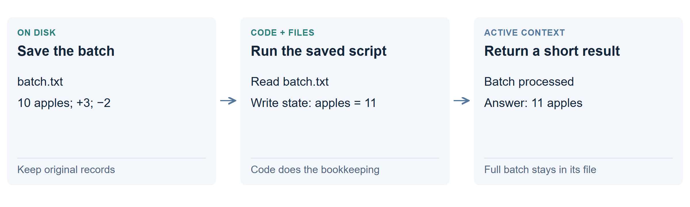

Keep records in files and use code
Save the records, then let code do the repetitive bookkeeping. The model writes a small program and reads its useful output. The full archive stays outside the conversation.

Walk through one batch
- Save the incoming batch to a file: “10 apples, add 3, remove 2.”
- Run a script that reads those records and writes “apples: 11” to a state file.
- Show the model a short result. When the final question arrives, read the saved total.
The storage instruction explicitly permits notes and copies. The model chooses the files and code; the application executes its commands and returns their output. Only that returned text joins the next prompt. The archive is not automatically loaded.
The same tool loop can search an old record when needed. How the model knows to read a file.
What does “plain agent” mean?
It can still run code, read files and write files. It simply has no special mechanism for rewriting its conversation. Unlike ordinary large-window chat, the bulk input goes to files instead of accumulating in messages.
What happened in the tests?
| Trial | Correct | Time |
|---|---|---|
| 121K ledger | 24/24 | 1.9 min |
| 478K stream | 24/24 | 1.9 min |
The original 121K run generated about 8K tokens and stayed below 9K active context. Much less model reading and writing was needed because the script maintained the totals.
Why does it work, and where does it fail?
A ledger has simple rules and a small final state. Code can process many records without asking the model to interpret every line. Documents needing judgment may require many more excerpts and model calls.
Files preserve information only if saved completely. Retrieval can miss a passage, and a buggy script can calculate the wrong answer. Keep original records so that results can be checked.
Technical details: file I/O, context and decode speed
The file-using agents wrote a small Python update script and saved incoming batches before applying it to a state file. The 121K plain run peaked at 8.9K active tokens; the 478K plain run peaked at 9.7K.
All tool commands in the 121K plain run took about 2.5 seconds together, including execution and non-file work. That is not an isolated disk-write measurement. File work happens between model calls; it does not require fetching the whole archive for each generated token.
This is application-level external memory. Streaming the numerical attention cache is a different mechanism.